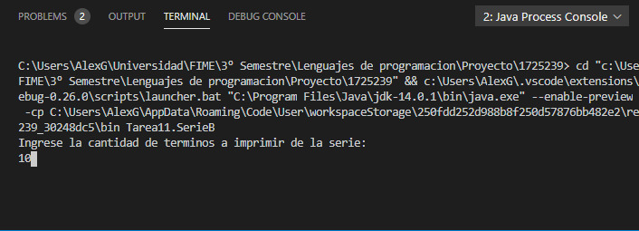
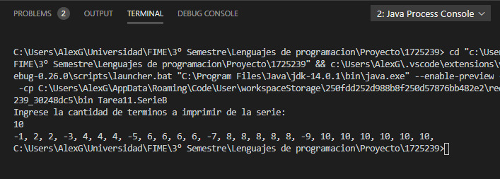
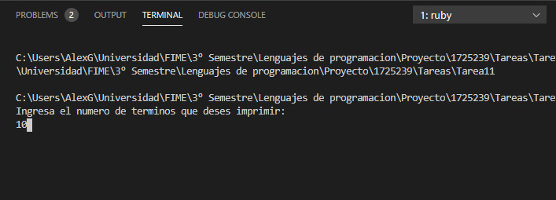
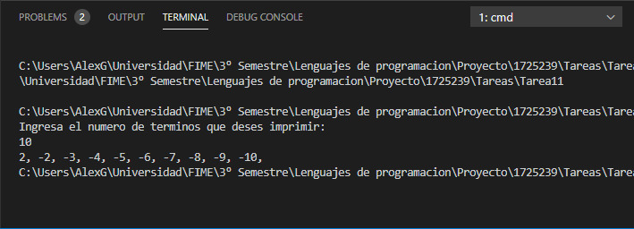

Tarea #11 Serie B
Construya un programa en JAVA y RUBY. Que calcule e imprima la siguiente serie para los N primeros términos
package Tarea11; import java.util.Scanner; public class SerieB { private static Scanner lector = new Scanner(System.in); public static void main(String[] args){ int n; System.out.println("Ingrese la cantidad de terminos a imprimir de la serie: "); n = lector.nextInt(); int x = 1; for(int i = 0; i < n; i++){ if((i + 1) % 2 == 0){ for(int j = 0; j < x; j++){ System.out.print("" + (i + 1) + ", "); } } else{ System.out.print("" + ((i + 1) * -1) + ", "); x++; } } } }


Programa Codificado en Java
puts("Ingresa el numero de terminos que deses imprimir:") n = gets().to_f x = 1.to_f for i in (0...n) i += 1 if(i/2 == 0) for j in (0...x) print("#{i+1}, ") end else print("#{i * -1}, ") x = x + 1 end end


Programa Codificado en Ruby
Menu Tareas
Tarea 10
Tarea 12